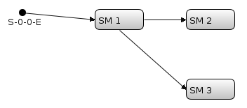
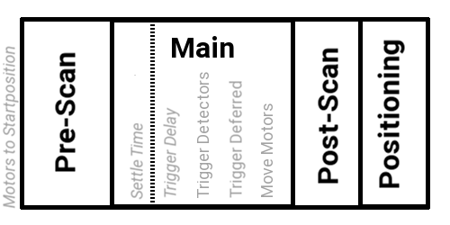
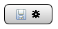
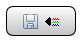
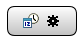
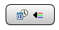

A scan description is a complete description of a measurement process. It defines which devices will be involved and how they behave.
Within a scan description multiple scans are possible. Each of them is represented by a chain. A chain is a composition of appended and nested scan modules (arranged as a tree) preceded by an event. The following figure shows a graphical representation of a scan description with one chain as it would appear in the editor:

This scan description example only has one chain started by S-0-0-E (the Start Event) followed by a scan module „SM 1” which has one appended („SM 2”) and one nested („SM 3”) scan module.
An appended scan module is executed after the preceding module is completed. A nested scan module is processed at each motor position of its parent scan module.
For now exactly one chain can be created with EVE Editor. The Start Event S-0-0-E is automatically triggered when the Scan is being started. In the future multiple chains with different start events (e.g. the completion of another scan module, chain, etc.) may be possible.
A scan module is a unit of abstraction to structure a scan. There are five different types of scan modules. Each of them has a different appearance in the Editor.
A simple scan module is partitioned into multiple stages called pre-scan, main, post-scan and positioning:

Execution of the scan module is as follows:
Note that the settle time delay is only executed for the first motor position.
Note that prescan actions are executed after the first motor position is actuated.
P. Die Prescan Aktionen werden ausgeführt, nachdem die erste Position des Scan Modules angefahren wurde. Ob die Prescan-Aktion auf eine Antwort wartet oder nur einfach abgeschickt wird, hängt von ihrer Vereinbarung im xml File ab (method=„GETPUTCB” oder =„GETPUT”)
P. Ob die Postscan-Aktion auf eine Antwort wartet oder nur einfach abgeschickt wird, hängt von ihrer Vereinbarung im xml File ab (method=„GETPUTCB” oder =„GETPUT”)
Note that a scan modules pre-scan, post-scan and positioning phases are only processed once (not at each iteration of its nested module(s)).
Note that axes in the parent and nested scan modules are actuated one after another (to reach their starting positions).

A static axis snapshot module defines a list of motor axes which records the current position of these axes. The list is modifiable.

A static channel snapshot module defines a list of detector channels which are read once. The list is modifiable.

A dynamic axis snapshot module records the current position of all axes found in the given device definition at the time of execution of the scan. The Editor shows a preview of all axes which would be considered if the scan would be executed right now.

A dynamic channel snapshot module reads the value of all detector channels found in the given device definition at the time of execution of the scan. The Editor shows a preview of all channels which would be considered if the scan would be executed right now.